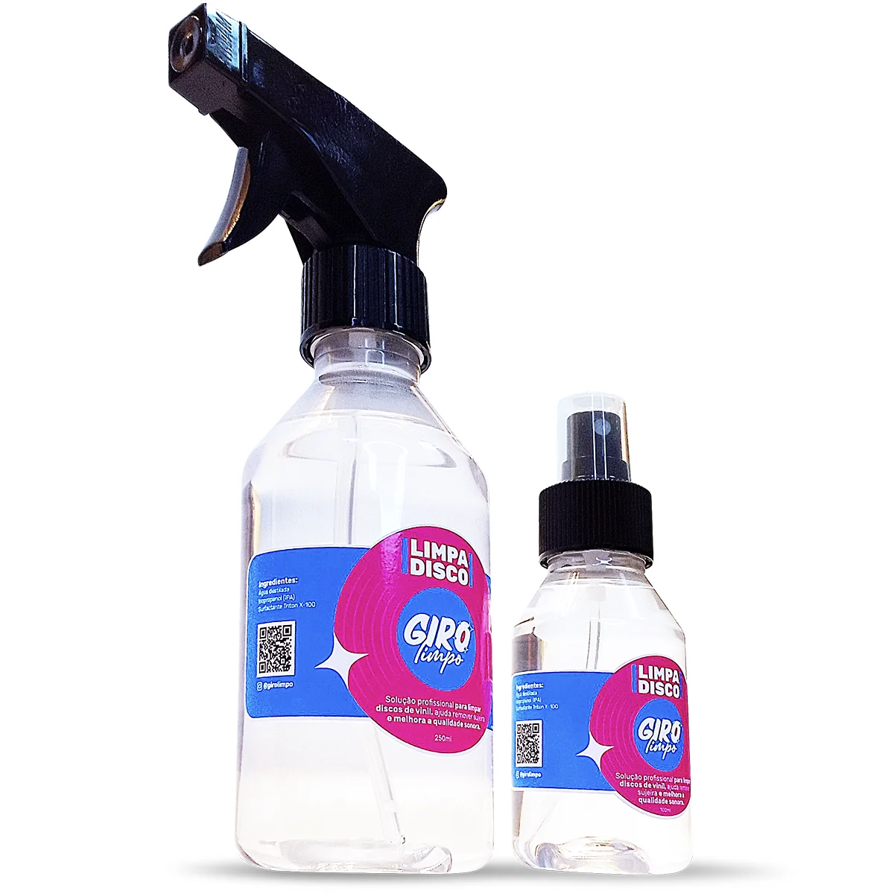
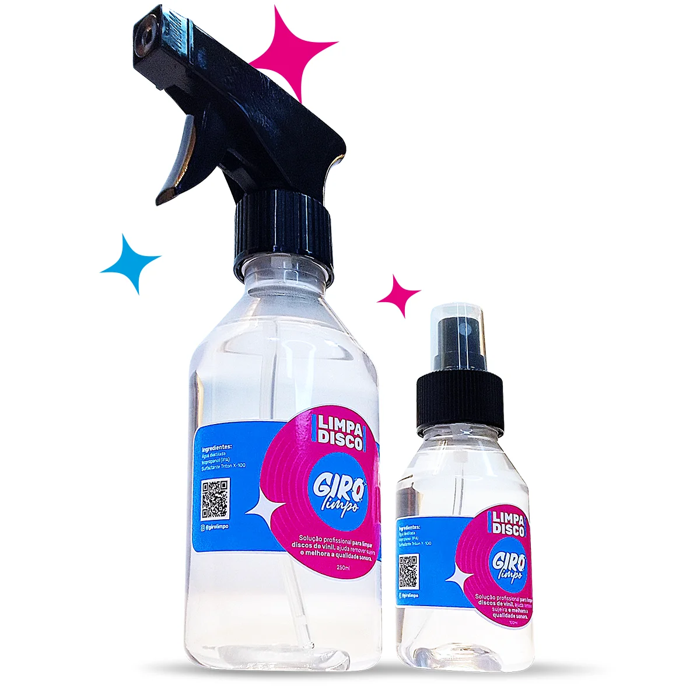
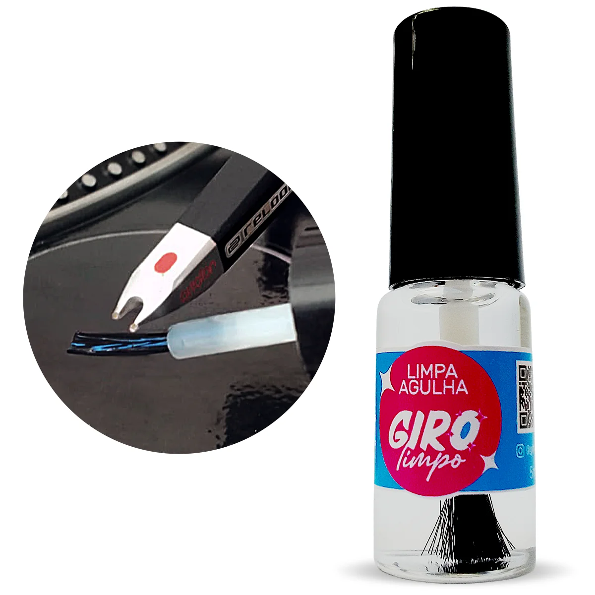
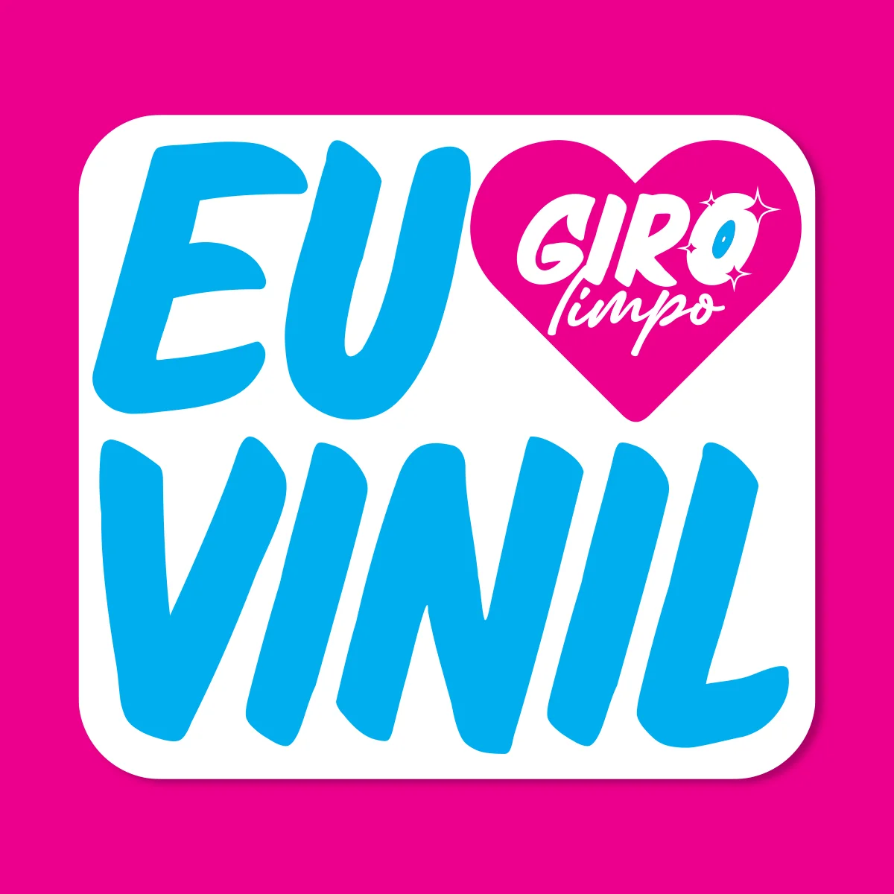
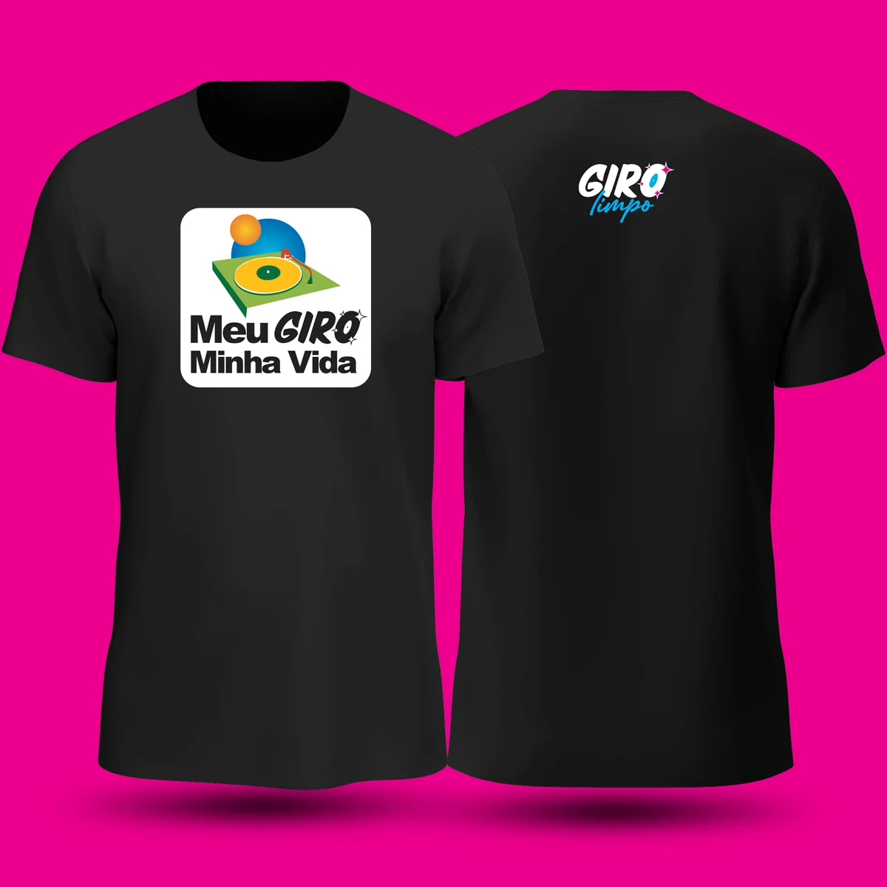

Limpa Discos
100 ml e 250 mlSurfactante e emoliente que reduz a tensão na superfície do vinil, facilitando sua penetração nos sulcos do disco e a remoção da sujeira.
Produtos e cuidados para a limpeza e conservação dos seus discos de vinil.

Surfactante e emoliente que reduz a tensão na superfície do vinil, facilitando sua penetração nos sulcos do disco e a remoção da sujeira.

Acessório que protege e veda os selos mais delicados durante a aplicação do Limpa Discos. O líquido não danifica o selo, mas alguns discos antigos podem ter selos mais sensíveis.

Ajuda a remover a sujeira acumulada e a conservar a agulha, prolongando sua vida útil. Use antes da audição, nunca imediatamente depois.

Base de apoio para a aplicação do produto, proporcionando estabilidade durante a limpeza e ajudando no acabamento.
Uma limpeza profunda para quem quer ir além.
As ondas ultrassônicas ajudam a desprender a sujeira acumulada nos sulcos do vinil, alcançando áreas que a limpeza convencional nem sempre consegue atingir.
Nosso processo utiliza água livre de impurezas, produzida por osmose reversa, tratamento antifúngico e acabamento estético cuidadoso. Cada disco recebe também um plástico interno novo, completando o processo de limpeza e conservação.
Cada sessão dura entre 30 e 60 minutos, de acordo com a avaliação de cada lote. Nossa máquina permite lavar até 15 discos por vez, garantindo agilidade no atendimento de lotes maiores para colecionadores e lojistas.
Toca-discos Direct Drive desenvolvido pela Giro Limpo.
O projeto Giro Groove nasceu de uma necessidade simples: criar toca-discos acessíveis para quem tem um orçamento limitado e que não danificassem os discos por excesso de peso da agulha.
Desde o início, a proposta foi desenvolver projetos simples e leves, produzidos em impressão 3D, mas capazes de oferecer uma ótima qualidade de áudio. Para isso, utilizamos cápsulas de bom custo-benefício, fáceis de encontrar e substituir.
O braço foi pensado para ser simples de usar e não exigir regulagens complexas. A pressão da agulha é de 2,5 gramas, um peso ideal para extrair uma boa qualidade de áudio sem aplicar peso excessivo sobre o disco e, assim, evitar danos ao vinil.
Depois de muitos protótipos Direct Drive de impressão 3D e de um modelo Belt Drive, que acabou se tornando um produto DIY comercial e agora está disponível aqui como projeto open source, chegamos a uma nova evolução.
Dessa evolução nasceu o Giro Groove DD.
Ele reúne a simplicidade e a leveza do braço dos projetos anteriores com a durabilidade e a praticidade de um motor Direct Drive, sem a necessidade de correia.
Além do sistema Direct Drive, o Giro Groove DD possui saída Line, permitindo conectá-lo diretamente a uma caixa de som disponível em sua casa, sem a necessidade de equipamentos adicionais para essa conexão.
Um toca-discos simples, acessível e pensado para quem quer ouvir seus discos sem complicação.
O Giro Groove DD pode ser adquirido por encomenda via WhatsApp.
Projeto de toca-discos DIY com arquivos disponibilizados gratuitamente.
Depois de muitos protótipos, testes e aprimoramentos, o Giro Groove de acionamento por correia (belt drive) chegou a uma versão que foi produzida e teve várias unidades vendidas.
Agora, esse projeto está sendo disponibilizado gratuitamente para quem quiser montar seu próprio toca-discos em casa, para uso pessoal e não comercial.
Por ser um projeto open source, você pode personalizar o seu Giro Groove como quiser: use adesivos, combine cores, experimente diferentes filamentos e crie uma versão que tenha a sua cara.
Se montar o seu, compartilhe o resultado nas redes sociais e marque a Giro Limpo. Vamos adorar ver as diferentes versões do projeto por aí. Sempre que possível, dê os devidos créditos à Giro Limpo.
O Giro Groove DIY é gratuito. Se o projeto foi útil para você e quiser contribuir para que novos projetos continuem sendo desenvolvidos, qualquer doação é bem-vinda.
Doe qualquer valor utilizando a chave PIX abaixo.
Você também pode apoiar o projeto através do PayPal.
Doar pelo PayPalO Giro Groove DIY é disponibilizado sob uma licença Creative Commons, permitindo que você utilize, estude, modifique e compartilhe o projeto dentro das condições estabelecidas pela licença.
O projeto é destinado a uso pessoal e não comercial. Consulte os termos completos da licença antes de utilizar, modificar ou redistribuir os arquivos.
Ver licença Creative CommonsStickers, camisetas e edições limitadas em collab.


Onde encontrar a Giro Limpo e como entrar em contato.
R. 7, 591 - Sl 2 - St. Central, Goiânia - GO, 74023-020
Av. T-10, QD 110 - LT 7 - St. Bueno, Goiânia - GO, 74223-060